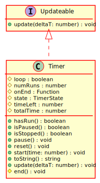

Hierarchy-Diagram
{kind=link}
Legend
 class
class
 interface
interface
 protected property
protected property
 public method
public method
 protected method
protected method
Hierarchy
- Timer
Implements
Index
Constructors
constructor
Parameters
time: number
Optional onEnd: Function
loop: boolean = false
Returns Timer
Properties
Protected loop
Protected num
The number of times this timer has been run
Protected on
The function to call when this timer ends
Protected state
The current state of this timer
Protected time
The amount of time left on the current run
Protected total
The total amount of time this timer runs for
Methods
Protected end
Returns void
has
Returns whether or not this timer has been run before
Returns boolean
true if it has been run at least once (after the latest reset), and false otherwise
is
Returns boolean
is
Returns boolean
pause
Returns void
reset
Resets this timer. Sets the progress back to zero, and sets the number of runs back to zero
Returns void
start
Parameters
Optional time: number
Returns void
to
Returns string
update
Updates this object.
Parameters
deltaT: number
Returns void
Whether or not this timer should loop